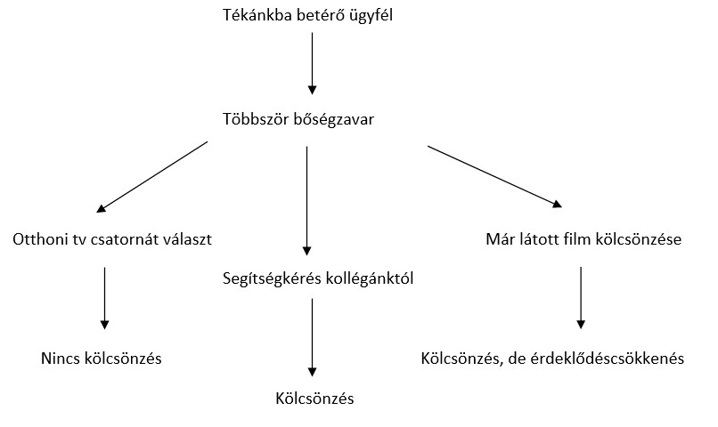
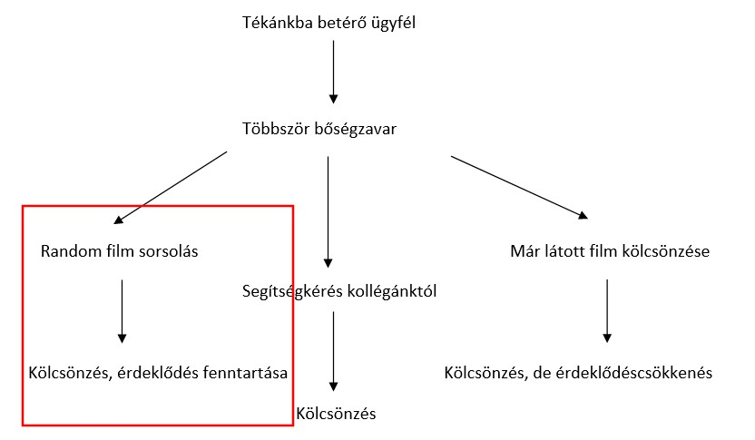

Követelmény Specifikáció
Filmsorsoló
Áttekintés:
Jelenlegi helyzet:
Vágyálom rendszer:
Jelenlegi üzleti folyamatok:

Igényelt üzleti folyamatok:

Felhasználói követelmények:
Törvényi háttér, megállapodás:
Modul |
ID |
Név |
Kifejtés |
Felület |
F1 |
Főoldal |
A weboldal megnyitásakor megjelenő oldal.
|
Felület |
F2 |
Borítóképek |
Borítóképek megjelenése a főoldalon
|
Funkció |
FU1 |
Random film |
Egy random film kisorsolása az adatbázisból
|
Funkció |
FU2
|
Pop-up |
Pop-up ablak feldobása pár másodperccel a kezdőlap betöltése után |
Funkció |
FU3 |
Sorsoló gomb |
Megnyomása után kerüljön megjelenítésre a kisorsolt random film
|
Funkció |
FU3 |
Újra gomb |
Az oldal újratöltése, a sorsolás megismétléséhez
|
Felület |
F4 |
Kisorsolt film pop-up |
A kisorsolt film pop-up ablakának megjelenítése.
|
Felület |
F5 |
Sorsolt film képe |
A kisorsolt film képének megjelenítése a pop-up-ban
|
Felület |
F6 |
Sorsolt film leírás |
A kisorsolt film leírásának megjelenítése
|
Adatbázis |
A1 |
Film tábla |
A film adatai egy relációs táblában tárolódnak
|
Adatbázis |
A2 |
Film adatok |
A film adatainak feltöltése a relációs táblában
|
Adatbázis |
A3 |
Film képek |
A borítóképek feltöltése az adatbázisba
|
Adatbázis |
A4 |
SQL script |
Az adatbázist, a táblát létrehozó és azt értékekkel feltöltő script
|
Felület |
F7 |
Reszponzivitás |
A weboldal legyen reszponzív, azaz egyaránt megjelenjen okostelefonon, tableten és laptopon is, ez a tényező ne befolyásolja a működést.
|
Környezet |
K1 |
Böngészőfüggetlenség |
A weboldal elérhető legyen a legnépszerűbb böngészőkből: Firefox, Chrome, Opera, Edge, Safari
|
Jogosultság |
J1 |
Jogosultság |
A weboldal bejelentkezés/regisztráció nélkül is, bárki számára elérhető legyen.
|